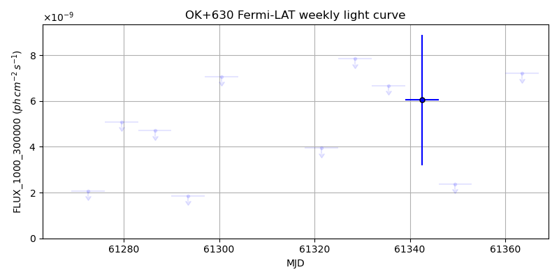

LAT Lightcurve site: https://fermi.gsfc.nasa.gov/ssc/data/access/lat/msl_lc/source/OK_p630
NED: Query
Time of last update of this page: UT: 2026-11-28 16:20 (MJD: 61372.681)
| Property | Value |
|---|---|
| R.A. | 9:21:36.24 |
| Dec. | 62:15:50.4 |
| z | 1.458 |
| 3FGL SpectrumType | |
| 3FGL PL Index | -1.00 |
| 3FGL Flux_100_300000 | -1.00e+00 |
| 3FGL Flux_1000_300000 | -1.00e+00 |
| 3FGL Flux >200 GeV | -1.00e+00 |
| 3FGL Extrap. Crab >200 GeV | -1.00 |
| 3FGL Flux After EBL Absorption >200GeV | -1.00e+00 |
| 3FGL EBL Crab Fraction >200GeV | -1.00 |
| MJD | dMJD | Flux | dFlux | Frac3FGL | FracCrab>200GeV | EBLFracCrab>200GeV |
|---|---|---|---|---|---|---|
| 61338.50 | 0.50 | 3.54e-07 | 0.00e+00 | 0.00 | 0.00 | -0.00 |
| 61357.50 | 0.50 | 1.37e-07 | 0.00e+00 | 0.00 | 0.00 | -0.00 |
| 61360.50 | 0.50 | 7.94e-07 | 0.00e+00 | 0.00 | 0.00 | -0.00 |
| 61364.50 | 0.50 | 3.42e-06 | 0.00e+00 | 0.00 | 0.00 | -0.00 |
| 61368.50 | 0.50 | 3.28e-08 | 0.00e+00 | 0.00 | 0.00 | -0.00 |

| MJD | dMJD | Flux | dFlux | Frac3FGL | FracCrab>200GeV | EBLFracCrab>200GeV |
|---|---|---|---|---|---|---|
| 61328.50 | 3.50 | 6.27e-08 | 0.00e+00 | 0.00 | 0.00 | -0.00 |
| 61335.50 | 3.50 | 1.08e-07 | 0.00e+00 | 0.00 | 0.00 | -0.00 |
| 61342.50 | 3.50 | 6.04e-08 | 0.00e+00 | 0.00 | 0.00 | -0.00 |
| 61349.50 | 3.50 | 2.65e-08 | 0.00e+00 | 0.00 | 0.00 | -0.00 |
| 61363.50 | 3.50 | 5.84e-08 | 0.00e+00 | 0.00 | 0.00 | -0.00 |

| MJD | dMJD | Flux | dFlux | Frac3FGL | FracCrab>200GeV | EBLFracCrab>200GeV |
|---|---|---|---|---|---|---|
| 61338.50 | 0.50 | 2.61e-08 | 0.00e+00 | 0.00 | 0.00 | -0.00 |
| 61357.50 | 0.50 | 2.34e-08 | 0.00e+00 | 0.00 | 0.00 | -0.00 |
| 61360.50 | 0.50 | 4.25e-07 | 0.00e+00 | 0.00 | 0.00 | -0.00 |
| 61364.50 | 0.50 | 1.55e-06 | 0.00e+00 | 0.00 | 0.00 | -0.00 |
| 61368.50 | 0.50 | 1.31e-08 | 0.00e+00 | 0.00 | 0.00 | -0.00 |

| MJD | dMJD | Flux | dFlux | Frac3FGL | FracCrab>200GeV | EBLFracCrab>200GeV |
|---|---|---|---|---|---|---|
| 61328.50 | 3.50 | 7.84e-09 | 0.00e+00 | 0.00 | 0.00 | -0.00 |
| 61335.50 | 3.50 | 6.67e-09 | 0.00e+00 | 0.00 | 0.00 | -0.00 |
| 61342.50 | 3.50 | 6.04e-09 | 0.00e+00 | 0.00 | 0.00 | -0.00 |
| 61349.50 | 3.50 | 2.38e-09 | 0.00e+00 | 0.00 | 0.00 | -0.00 |
| 61363.50 | 3.50 | 7.21e-09 | 0.00e+00 | 0.00 | 0.00 | -0.00 |
--------------------------------------------------------- Using user-supplied coords: 9:21:36.24 62:15:50.4 2000 --------------------------------------------------------- FLWO UT night of: 2026-11-29 Local Sid. @ Midnight: 04:08 Sunset (-15.0) (local, UT): 18:31 01:31 Sunrise (-15.0) (local, UT): 05:53 12:53 Moonrise (local, UT): 21:57 04:57 Moonset (local, UT): Moon phase: 0.72 --------------------------------------------------------- AzTime LSID UT Obj_el Obj_az Mn_el Mn_az Sep. --------------------------------------------------------- 18:31 22:39 01:31 5.2 8.7 -32.9 32.1 43.9 19:01 23:09 02:01 6.3 12.1 -29.4 38.9 44.0 19:31 23:39 02:31 7.8 15.3 -25.4 45.0 44.0 20:01 00:09 03:01 9.7 18.3 -21.0 50.6 44.1 20:31 00:39 03:31 11.8 21.1 -16.2 55.6 44.1 21:01 01:09 04:01 14.2 23.7 -11.1 60.2 44.2 21:31 01:39 04:31 16.9 26.0 -5.4 64.5 44.2 22:01 02:09 05:01 19.8 28.1 0.4 68.5 44.2 22:31 02:39 05:31 22.9 29.9 5.8 72.2 44.3 23:01 03:10 06:01 26.2 31.3 11.6 75.8 44.4 23:31 03:40 06:31 29.5 32.4 17.5 79.4 44.4 00:01 04:10 07:01 33.0 33.1 23.6 82.9 44.5 00:31 04:40 07:31 36.5 33.3 29.7 86.5 44.5 01:01 05:10 08:01 40.0 33.0 35.8 90.3 44.6 01:31 05:40 08:31 43.5 32.2 42.0 94.4 44.7 02:01 06:10 09:01 46.8 30.6 48.1 99.1 44.7 02:31 06:40 09:31 50.0 28.3 54.2 104.7 44.8 03:01 07:10 10:01 52.8 25.1 60.1 111.7 44.9 03:31 07:40 10:31 55.3 20.9 65.6 121.1 45.0 04:01 08:10 11:01 57.4 15.7 70.5 134.7 45.1 04:31 08:40 11:31 58.8 9.6 74.0 154.7 45.2 05:01 09:11 12:01 59.5 2.9 75.2 181.1 45.3 05:31 09:41 12:31 59.4 356.0 73.6 206.8 45.4 05:53 10:02 12:53 58.9 351.2 71.0 221.2 45.5 --------------------------------------------------------- Dark hours >55 deg.: 0.00